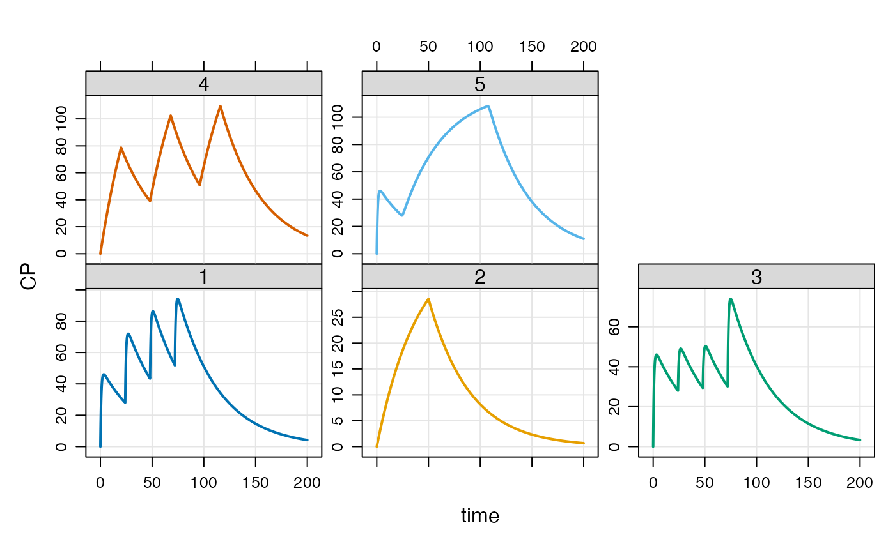
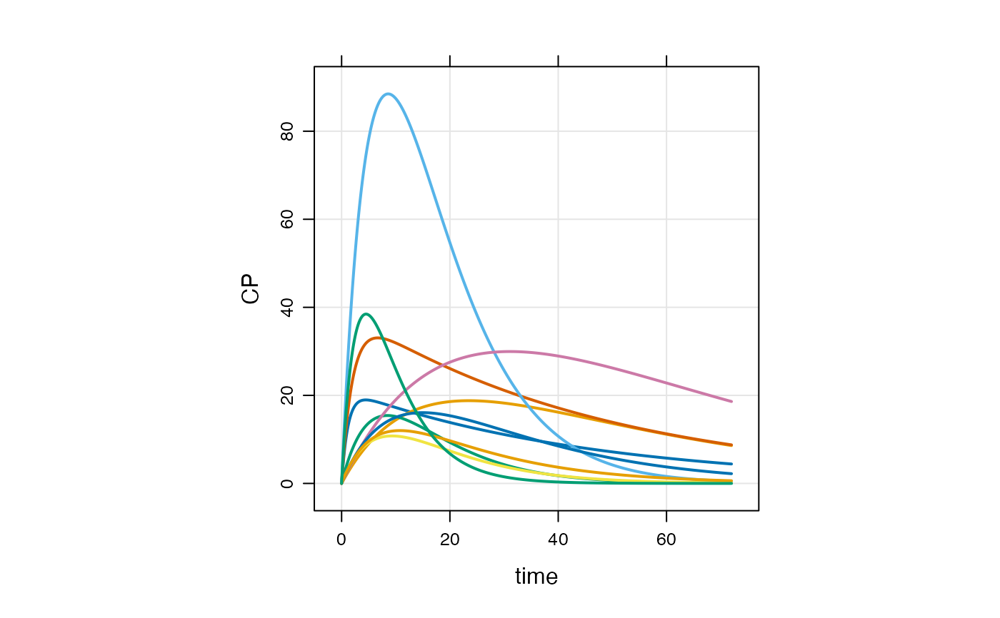
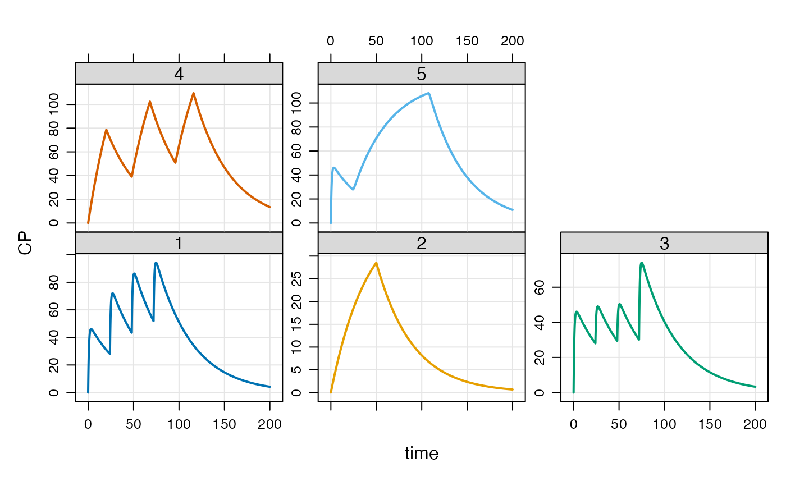
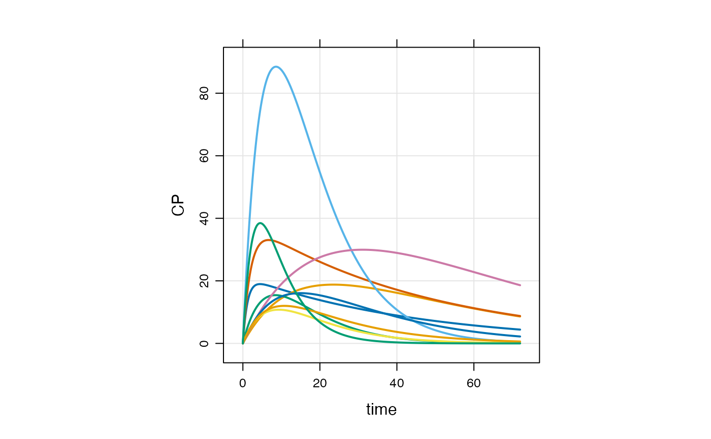

mrgsolve is an R package maintained under the auspices of Metrum Research Group that facilitates simulation from models based on systems of ordinary differential equations (ODE) that are typically employed for understanding pharmacokinetics, pharmacodynamics, and systems biology and pharmacology. mrgsolve consists of computer code written in the R and C++ languages, providing an interface to a C++ translation of the lsoda differential equation solver. See aboutsolver for more information.
Resources
Main mrgsolve resource page: https://mrgsolve.org
User guide: https://mrgsolve.org/user_guide/
Package documentation and vignettes: https://mrgsolve.org/docs/
Author
Maintainer: Kyle T Baron kyleb@metrumrg.com (ORCID)
Other contributors:
Bill Gillespie [contributor]
Charles Margossian [contributor]
Devin Pastoor [contributor]
Bill Denney (ORCID) [contributor]
Dilawar Singh [contributor]
Felicien Le Louedec (ORCID) [contributor]
Timothy Waterhouse (ORCID) [contributor]
Kyle Meyer [contributor]
Metrum Research Group [copyright holder]
Examples
## example("mrgsolve")
mod <- mrgsolve::house(delta=0.1) %>% param(CL=0.5)
events <- ev(amt=1000, cmt=1, addl=5, ii=24)
events
#> Events:
#> time amt ii addl cmt evid
#> 1 0 1000 24 5 1 1
mod
#>
#>
#> -------------- source: housemodel.cpp --------------
#>
#> project: /private/var/fol...solve/project
#> shared object: mrgsolve
#>
#> time: start: 0 end: 120 delta: 0.1
#> add: <none>
#>
#> compartments: GUT CENT RESP [3]
#> parameters: CL VC KA F1 D1 WTCL WTVC SEXCL SEXVC
#> KIN KOUT IC50 WT SEX [14]
#> captures: DV CP [2]
#> omega: 4x4
#> sigma: 1x1
#>
#> solver: atol: 1e-08 rtol: 1e-08 maxsteps: 20k
#> ------------------------------------------------------
see(mod)
#>
#> Model file: housemodel.cpp
#> $PROB
#>
#> # `mrgsolve` housemodel
#>
#> This model is compiled with `mrgsolve`.
#>
#> - Author: Metrum Research Group, LLC
#> - Description: Generic indirect response PK/PD model
#> - Covariates: Weight, female sex
#> - Random effects: CL, VC, KA, KOUT
#> - Error model: exponential
#>
#>
#>
#> $PLUGIN base
#>
#> $PARAM @annotated
#> CL : 1 : Clearance (L/hr)
#> VC : 20 : Volume of distribution (L)
#> KA : 1.2 : Absorption rate constant (1/hr)
#> F1 : 1.0 : Bioavailability fraction (.)
#> D1 : 2.0 : Infusion duration (hr)
#> WTCL : 0.75 : Exponent WT on CL
#> WTVC : 1.00 : Exponent WT on VC
#> SEXCL: 0.7 : Prop cov effect on CL
#> SEXVC: 0.85 : Prop cov effect on VC
#> KIN : 100 : Resp prod rate constant (1/hr)
#> KOUT : 2 : Resp elim rate constant (1/hr)
#> IC50 : 10 : Conc giving 50% max resp (ng/ml)
#>
#> $PARAM @annotated @covariates
#> WT : 70 : Weight (kg)
#> SEX : 0 : Covariate female sex
#>
#> $CMT @annotated
#> GUT : Dosing compartment (mg)
#> CENT : Central compartment (mg)
#> RESP : Response (unitless)
#>
#> $OMEGA @labels ECL EVC EKA EKOUT
#> 0 0 0 0
#>
#> $SIGMA @labels EXPO
#> 0
#>
#> $SET end=120, delta=0.25
#>
#> $GLOBAL
#> #define CP (CENT/VCi)
#> #define INH (CP/(IC50+CP))
#>
#> typedef double localdouble;
#>
#> $MAIN
#> F_GUT = F1;
#> D_CENT = D1;
#>
#> double CLi = exp(log(CL) + WTCL*log(WT/70) + log(SEXCL)*SEX + ECL);
#> double VCi = exp(log(VC) + WTVC*log(WT/70) + log(SEXVC)*SEX + EVC);
#> double KAi = exp(log(KA) + EKA);
#> double KOUTi = exp(log(KOUT) + EKOUT);
#>
#> RESP_0 = KIN/KOUTi;
#>
#> $ODE
#> dxdt_GUT = -KAi*GUT;
#> dxdt_CENT = KAi*GUT - (CLi/VCi)*CENT;
#> dxdt_RESP = KIN*(1-INH) - KOUTi*RESP;
#>
#> $TABLE
#> double DV = CP*exp(EXPO);
#>
#> $CAPTURE @annotated
#> DV: Dependent variable (ng/ml)
#> CP: Plasma concentration (ng/ml)
if (FALSE) {
stime(mod)
}
param(mod)
#>
#> Model parameters (N=14):
#> name value . name value
#> CL 0.5 | SEX 0
#> D1 2 | SEXCL 0.7
#> F1 1 | SEXVC 0.85
#> IC50 10 | VC 20
#> KA 1.2 | WT 70
#> KIN 100 | WTCL 0.75
#> KOUT 2 | WTVC 1
init(mod)
#>
#> Model initial conditions (N=3):
#> name value . name value
#> CENT (2) 0 | RESP (3) 50
#> GUT (1) 0 | . ... .
out <- mod %>% ev(events) %>% mrgsim(end=168)
head(out)
#> ID time GUT CENT RESP DV CP
#> 1 1 0.0 0.0000 0.0000 50.00000 0.000000 0.000000
#> 2 1 0.0 1000.0000 0.0000 50.00000 0.000000 0.000000
#> 3 1 0.1 886.9204 112.9355 48.03655 5.646775 5.646775
#> 4 1 0.2 786.6279 212.8183 44.31899 10.640917 10.640917
#> 5 1 0.3 697.6763 301.1252 40.24379 15.056258 15.056258
#> 6 1 0.4 618.7834 379.1657 36.29753 18.958286 18.958286
tail(out)
#> ID time GUT CENT RESP DV CP
#> 1677 1 167.5 1.218838e-22 671.4739 11.36504 33.57369 33.57369
#> 1678 1 167.6 1.077788e-22 669.7973 11.38701 33.48987 33.48987
#> 1679 1 167.7 9.538423e-23 668.1249 11.40901 33.40625 33.40625
#> 1680 1 167.8 8.441723e-23 666.4567 11.43104 33.32283 33.32283
#> 1681 1 167.9 7.466555e-23 664.7926 11.45310 33.23963 33.23963
#> 1682 1 168.0 6.610146e-23 663.1327 11.47519 33.15664 33.15664
dim(out)
#> [1] 1682 7
plot(out, GUT+CP~.)
 sims <- as.data.frame(out)
t72 <- dplyr::filter(sims, time==72)
str(t72)
#> 'data.frame': 1 obs. of 7 variables:
#> $ ID : num 1
#> $ time: num 72
#> $ GUT : num 1000
#> $ CENT: num 1037
#> $ RESP: num 8
#> $ DV : num 51.8
#> $ CP : num 51.8
idata <- data.frame(ID=c(1,2,3), CL=c(0.5,1,2),VC=12)
out <- mod %>% ev(events) %>% mrgsim(end=168, idata=idata, req="")
plot(out)
sims <- as.data.frame(out)
t72 <- dplyr::filter(sims, time==72)
str(t72)
#> 'data.frame': 1 obs. of 7 variables:
#> $ ID : num 1
#> $ time: num 72
#> $ GUT : num 1000
#> $ CENT: num 1037
#> $ RESP: num 8
#> $ DV : num 51.8
#> $ CP : num 51.8
idata <- data.frame(ID=c(1,2,3), CL=c(0.5,1,2),VC=12)
out <- mod %>% ev(events) %>% mrgsim(end=168, idata=idata, req="")
plot(out)
 out <- mod %>% ev(events) %>% mrgsim(carry_out="amt,evid,cmt,CL")
head(out)
#> ID time evid amt cmt GUT CENT RESP DV CP
#> 1 1 0.0 0 0 0 0.0000 0.0000 50.00000 0.000000 0.000000
#> 2 1 0.0 1 1000 1 1000.0000 0.0000 50.00000 0.000000 0.000000
#> 3 1 0.1 0 0 0 886.9204 112.9355 48.03655 5.646775 5.646775
#> 4 1 0.2 0 0 0 786.6279 212.8183 44.31899 10.640917 10.640917
#> 5 1 0.3 0 0 0 697.6763 301.1252 40.24379 15.056258 15.056258
#> 6 1 0.4 0 0 0 618.7834 379.1657 36.29753 18.958286 18.958286
ev1 <- ev(amt=500, cmt=2,rate=10)
ev2 <- ev(amt=100, cmt=1, time=54, ii=8, addl=10)
events <- c(ev1+ev2)
events
#> Events:
#> time amt rate cmt evid ii addl
#> 1 0 500 10 2 1 0 0
#> 2 54 100 0 1 1 8 10
out <- mod %>% ev(events) %>% mrgsim(end=180, req="")
plot(out)
out <- mod %>% ev(events) %>% mrgsim(carry_out="amt,evid,cmt,CL")
head(out)
#> ID time evid amt cmt GUT CENT RESP DV CP
#> 1 1 0.0 0 0 0 0.0000 0.0000 50.00000 0.000000 0.000000
#> 2 1 0.0 1 1000 1 1000.0000 0.0000 50.00000 0.000000 0.000000
#> 3 1 0.1 0 0 0 886.9204 112.9355 48.03655 5.646775 5.646775
#> 4 1 0.2 0 0 0 786.6279 212.8183 44.31899 10.640917 10.640917
#> 5 1 0.3 0 0 0 697.6763 301.1252 40.24379 15.056258 15.056258
#> 6 1 0.4 0 0 0 618.7834 379.1657 36.29753 18.958286 18.958286
ev1 <- ev(amt=500, cmt=2,rate=10)
ev2 <- ev(amt=100, cmt=1, time=54, ii=8, addl=10)
events <- c(ev1+ev2)
events
#> Events:
#> time amt rate cmt evid ii addl
#> 1 0 500 10 2 1 0 0
#> 2 54 100 0 1 1 8 10
out <- mod %>% ev(events) %>% mrgsim(end=180, req="")
plot(out)
 ## "Condensed" data set
data(extran1)
extran1
#> ID amt cmt time addl ii rate evid
#> 1 1 1000 1 0 3 24 0 1
#> 2 2 1000 2 0 0 0 20 1
#> 3 3 1000 1 0 0 0 0 1
#> 4 3 500 1 24 0 0 0 1
#> 5 3 500 1 48 0 0 0 1
#> 6 3 1000 1 72 0 0 0 1
#> 7 4 2000 2 0 2 48 100 1
#> 8 5 1000 1 0 0 0 0 1
#> 9 5 5000 1 24 0 0 60 1
out <- mod %>% data_set(extran1) %>% mrgsim(end=200)
plot(out,CP~time|factor(ID))

## idata
data(exidata)
out <-
mod %>%
ev(amt=1000, cmt=1) %>%
idata_set(exidata) %>%
mrgsim(end=72)
plot(out, CP~., as="log10")
#> Warning: In subset.data.frame(as.data.frame(x), ...) :
#> extra argument ‘as’ will be disregarded

# Internal model library
if (FALSE) {
mod <- mread("irm1", modlib())
mod
x <- mod %>% ev(amt=300, ii=12, addl=3) %>% mrgsim
}
## "Condensed" data set
data(extran1)
extran1
#> ID amt cmt time addl ii rate evid
#> 1 1 1000 1 0 3 24 0 1
#> 2 2 1000 2 0 0 0 20 1
#> 3 3 1000 1 0 0 0 0 1
#> 4 3 500 1 24 0 0 0 1
#> 5 3 500 1 48 0 0 0 1
#> 6 3 1000 1 72 0 0 0 1
#> 7 4 2000 2 0 2 48 100 1
#> 8 5 1000 1 0 0 0 0 1
#> 9 5 5000 1 24 0 0 60 1
out <- mod %>% data_set(extran1) %>% mrgsim(end=200)
plot(out,CP~time|factor(ID))

## idata
data(exidata)
out <-
mod %>%
ev(amt=1000, cmt=1) %>%
idata_set(exidata) %>%
mrgsim(end=72)
plot(out, CP~., as="log10")
#> Warning: In subset.data.frame(as.data.frame(x), ...) :
#> extra argument ‘as’ will be disregarded

# Internal model library
if (FALSE) {
mod <- mread("irm1", modlib())
mod
x <- mod %>% ev(amt=300, ii=12, addl=3) %>% mrgsim
}